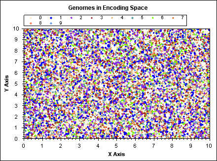

K-means clustering (known widely as just 'K-means') is a method that partitions N data points within a vector space into K distinct clusters. Points are allocated to the closest cluster, and the location of clusters arises naturally to fit the available data. K-means minimizes intra-cluster variance; that is, the discovered clusters minimize the sum of the squared distances between data points and the center (centroid) of their containing cluster; however, K-means is not guaranteed to find the global minimum.
An alternative explanation from wikipedia:
K-means clustering is a method of cluster analysis which aims to partition N observations into K clusters in which each observation belongs to the cluster with the nearest mean.
k-means has some attributes that make it a promising candidate for performing speciation with NEAT. These are:
In addition, some benefits of k-means in comparison to speciation in C-NEAT[1] are:
More speculatively, it is likely that K-means finds better clusters than C-NEAT, that is, we can reasonably expect that K-means will generally result in lower intra-cluster variance ('tighter' clusters), partly due to the second bullet point above. However this is an unproven claim at this time.
There exist a number of algorithm variations for implementing the K-means method; however, the standard approach is to start with randomly allocated clusters and to iteratively re-allocate points until the clusters become stable. The algorithm steps are:
The algorithm stops when the clusters become stable (e.g. zero re-allocations) or some maximum number of iterations has been performed. The latter test case is necessary because the clusters may not stabilise in a reasonable amount of time for some sets of points, in particular this issue may become more prevalent when dealing with points in higher dimensional spaces and/or when using non-Euclidean distance metrics such as Manhattan distance. Note however that unstable clusters are typically not a significant issue because clusters will be generally be distinct and well formed after just a few iterations, despite not being completely stable.
Important modifications to the above algorithm are:
N.B. An alternative approach that avoids empty clusters is the K-medoids algorithm. K-medoids is very similar to K-means but instead of calculating a centroid, a cluster member is chosen as a cluster exemplar (knoen as a medoid); this has the affect that each cluster will always have at least one member.
The centroid is the point that resuts in the lowest mean squared distance between it and the members of the cluster. For Euclidean distance this is the componentwise mean of all the points in a cluster, e.g. for two points on the Cartesian plane, `(x1, y1)`, `(x2, y2)`, the centroid is given by:
$$ x = \frac{x1+x2}{2}, y = \frac{y1 + y2}{2}$$
This is also the equation for calculating the center of mass (barycenter) of a set of points of equal mass.
The centroid calculation is dependent on the distance metric and whether one wishes to minimize mean distance (MD) or mean squared distance (MSD). The appropriate calculations for L1, L2 distance and MD and MSD are:
| L1 Distance (Manhattan Distance) | L2 Distance (Euclidean Distance) | |
|---|---|---|
| Minimize(Sum(Distance)) | Componentwise median | Geometric Median. Fermat-Weber point. Weiszfeld's Algorithm. |
| Minimize(Sum(Distance^2)) | ? | Componentwise mean. Classical Centroid. |
Note that the name K-means is based on the centroid calculation in the bottom right square of table 1, therefore strictly speaking any deviation from this approach is not strictly K-means as it is generally known. E.g. minimizing the sum of L1 distance (top left sqaure in table 1) is sometimes refered to as K-medians.
For certain combinations of distance metric, choice of minimizing distance, or squared distance it may not be possible or convenient to calculate a cluster centroid. In these cases K-means can still be used by using a different method for calculating the distance between a point and a cluster. Instead of measuring the distance between a point and the centroid we can calculate the mean distance between a point and every point in the cluster. We can then allocate the point to the nearest cluster as normal.
Another variation on this idea is the K-medoids algorithm. K-medoids requires that the centroid be one of the points in the cluster, therefore no centroid calculation is required. However, by limiting the centroid to be one of the points the centroid is effectively a sub-optimal approximate choice of centroid with regard to minimizing mean distance or mean squared distance. Also, the greater number of point to point distance calculations required by K-medoids and centroid free K-means results in an algorithm with worse time complexity than standard K-means using centroids.
An alternative to centroid free K-means or K-medoids is to use an approximate centroid calculation. The componentwise mean and median calculations that give an optimal centroid for two of the combinations in table 1 can also be used as a simple method to produce an approximate (and therefore sub-optimal) centroid in the other two.
The standard distance metric used with K-means is Euclidean (L2) distance and this has the nice quality of having an easy to compute centroid calculation. However, the justification for using L2 distance is not always clear. Where points are composed of multiple independent (or mostly independent) variables such as document word counts, there is a case to be made for L1 to being a better measure of distance between to points.
Where genomes are concerned we can consider the family tree that represents the chain of parents that lead to a given genome through a series of mutations and crossovers. Now consider two genomes representing two different species on the leaf nodes of the tree and how distant they are genetically. In nature there is a great deal of genetic similarity between even wildly different species, but there is quite likely no direct or easy sequence of mutations that leads directly from one to another. The mutations that caused the two species to separate must be reversed, e.g. we reverse the mutations on species A, effectively walking back up the family tree to a common ancestor. We can now apply the mutations that lead to species B; walking back down the family tree on a separate path.
Species A and B have both acquired a series of mutations that have incrementally improved their fitness, but the mutations have also caused A and B to become increasingly incompatible and specialised with respect to each other. If we were to try and mutate species A to B directly we would have to find a sequence of fit genomes directly between A and B and this implies mixed morphologies (in nature) and mixed topolies (for neural networks).
We know there is a path up the family tree and back down, and this is similar in concept to Manhattan(L1) distance, where to traval between points we must travel parallel to the x and y axes rather than directly between the two points. The genetic distance case can also be thought of as a variation of edit distance which measures the number of edits requried to convert A into B, but crucially the type or 'direction' of edits is restricted.
To apply K-means to genomes their position in some coordinate space must be defined. The simplest approach is to consider each unique connection gene innovation ID to represent a numbered dimension and the connection weight as a position in that dimension. This effectively means we have an unbounded number of dimensions; the dimensionality of the space increases as the population complexifies. Also note that we ignore neuron genes because they are redundant in the context of describing an artificial neural network (ANN); a complete ANN can be constructed from the connection genes alone.
SharpNEAT abstracts representation of position away from genomes by defining a CoordinateVector class that contains a list of (ID,value) pairs; this list only defines a position in the dimensions a genome is in, not a position for every innovation ID currently defined across the whole population. CoordinateVector therefore remains relatively compact in terms of computer memory usage. An alternative approach would be to define distance metrics that operate on genomes directly, this allows the same coordinate space to be used but the range of speciation strategies would be limited. Crucially, with no abstract position class there is no way of representing the centroid required by strategies such as K-means, apart from by manufacturing a new genome to act as a centroid; however that approach leads to a clash of design goals inside genome classes. In addition, distance metric classes would have to be implemented for each type of genome, e.g. common metrics such as Manhattan distance would have to be re-implemented for each genome class, thus creating additional development and testing effort when experimenting with new genome types.
It turns out that the genome distance metric defined by C-NEAT[1] is very close to Manhattan distance. For matching conenction genes the C-NEAT distance scales the distance between them by the `c_3` coefficient (see [1]). Non-matching genes yield a fixed distance, represented by the `c_1` and `c_2` coefficients in the C-NEAT distance equation. By applying a coefficeint to Manhattan distance to scale matching positions on an axis, and also a fixed constant for non-matches we can generalise the Manhattan distance metric to accomodate both classical Manhattan distance (MD) and C-NEAT. For clasical MD the coefficient is simply set to 1.0 and the constant to 0.0. If necessary we can also define a second coefficient in order to distinguish between disjoint and excess genes/positions.
The following animated GIF demonstrates K-means clustering operating on a set of randomly generated points in 2D space. The points have fixed position, point colour indicates the owning cluster and we can see how clusters spontaneously form to represent the data and iteratively improve over a number of algorithm iterations.
(click image to see animation).
For `N` data points, `K` clusters and `i` iterations:
Colin,
September, 2009
 Copyright 2009, 2016 Colin Green.
Copyright 2009, 2016 Colin Green.